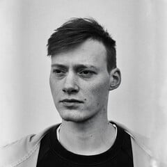
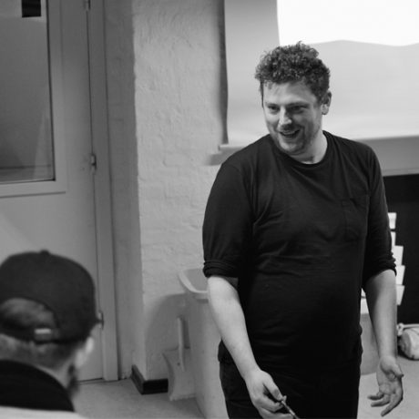
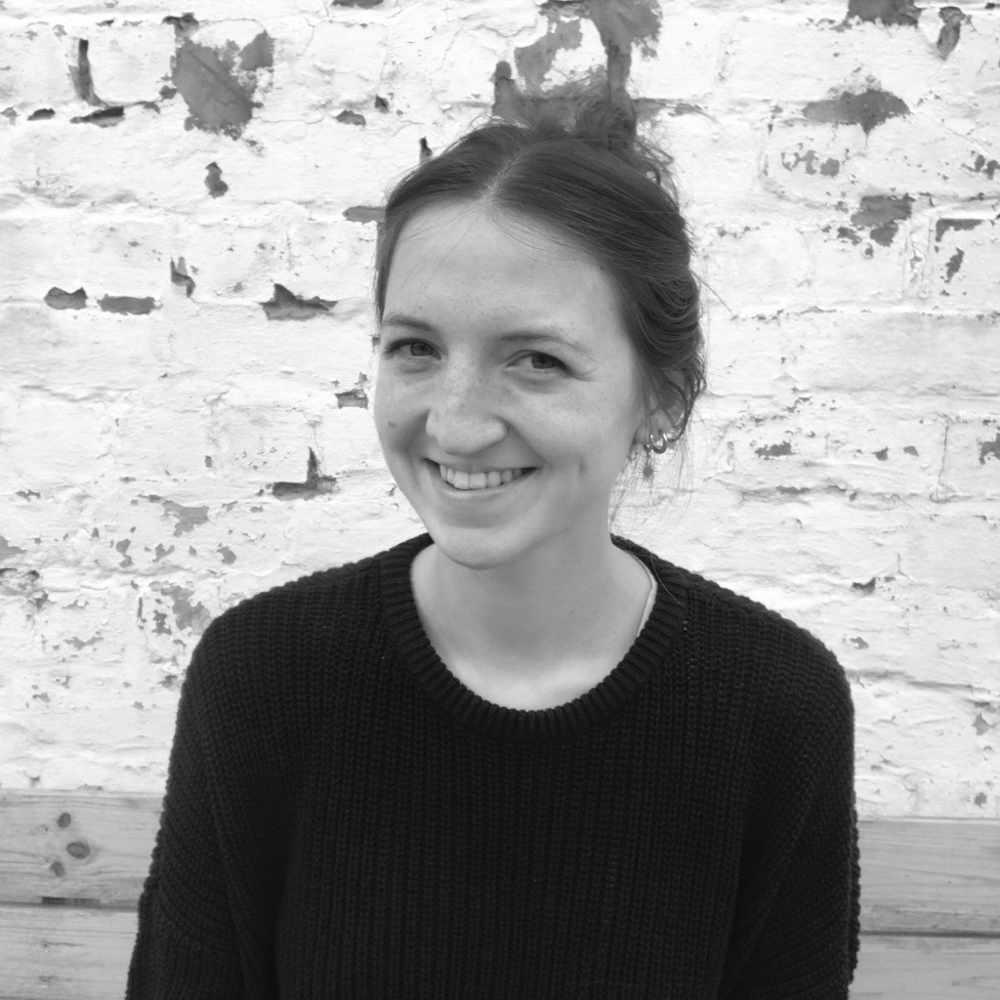
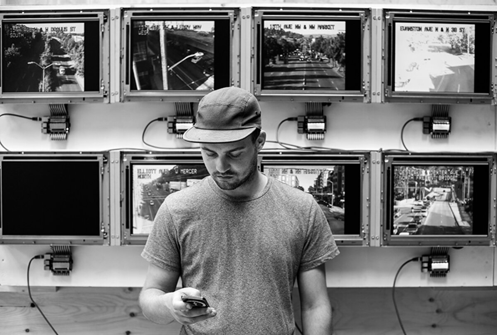
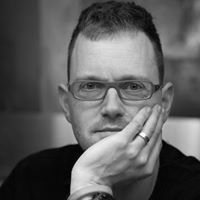
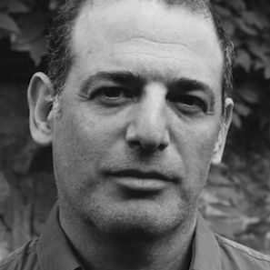

| Time in Hours |
Sunday 4/09 |
Monday 5/09 |
Tuesday 6/09 |
Wednesday 7/09 |
Thursday 8/09 |
Friday 9/09 |
Saturday 10/09 |
Sunday 11/09 |
Monday 12/09 |
Tuesday 13/09 |
Wednesday 14/09 |
Thursday 15/09 |
| 9.00 |
arrival / check-in Hostel |
breakfast (*) |
Morning Welcome |
Morning Welcome |
|
Morning Welcome |
Morning Welcome |
|
Morning Welcome |
Morning Welcome |
Morning Welcome |
Morning Welcome |
| 9.30 |
Course #2
How to Talk to Sensors? - Gilles Callebaut
In this interactive workshop, students will learn how to program an ESP32 board to read out a sensor. The general workflow, on how to program and how these platforms work, will be presented. After this session, the students should be able to read out the other sensors provided by the documentation we will give.
[E]
duration: 9.00 - 12.00
Gilles Callebaut  |
Course #3
Design Sprint - Christophe Barlieb
How can we properly frame complex questions to rapidly target core problems and create plausible solutions? Sense, Adapt, Create are inherent to the Design Sprint concept. We will use these methods to explore iterative design processes.
[A]
duration: 9.30 - 12.30
Christophe Barlieb
|
Site Visit
@ Verbeke Foundation- Kemzeke (B) |
Worksession in Groups |
Course #6
Course #6 Design Thinking - Anders Warrel
NaN
[E]
duration: 9.00 - 12.00
Anders Warrel |
Day off |
Course #8
Data, Design VR - Stefan Van der Spek & Hans Hoogeboom
NaN
[Ar]
duration: 9.30 - 12.30
Stefan Van der Spek , Hans Hoogenboom
|
Course #9
How to Pitch - Anders J.J
Anders J Johansson receivPd the M.S., Lic.Eng., and Ph.D. degrees in electrical engineering from Lund University, Lund, Sweden, in 1993, 2000, and 2004, respectively. From 1994 to 1997, he was with Ericsson Mobile Communications AB, developing transceivers and antennas for mobile phones. Since 2005, he has been an Associate Professor with the Department of Electrical and Information Technology, Lund University. His research interests include antennas, wave propagation, and telemetric devices for medical implants, as well as antenna systems and propagation modeling for MIMO systems.
[Ar]
duration: 9.30 - 11.00
Anders J.Johansson
|
Worksession in Groups |
Worksession in Groups |
| 10.00 |
| 10.30 |
| 11.00 |
Welcome!
We welcome you in the Hostel.
Afterwards, we collect the bycicles @ De Krook and we cycle in group to Kasteel ter Beken.
|
| 11.30 |
Worksession in Groups |
| 12.00 |
| 12.30 |
Lunch |
Lunch |
Lunch |
Lunch |
Lunch |
Lunch |
Lunch |
Lunch |
Lunch |
| 13.00 |
| 13.30 |
Teambuilding |
Intro main Questions |
Course #4
Point Clouds - Joris Putteneers
Joris putteneers is an architect and researcher, interested in speculating the anthroposcene through means of software, hardware and media technologies.
His work has been exhibited at MomA New York, Londen design festival, Venice Biennale and multiple film
He has taught studios and workshops internationally at the Bartlett UCL, Texas A&M, KUL Faculty of Architecture and TU Wien.
Since 2017 he has been actively working in his practice where he develops solutions in the fields of Data driven design, Machine learning applications, web and software development, visualisations and Art direction.
[Ar+E]
duration: 13.30 - 15.30
Joris Putteneers
|
Course #5
Blender Stories - Dimitri Coppens
In the storyboarding phase of a video or animation project, the camera movement, angle and framing are important choices. An interesting way to explore the options, is by loading (hand-drawn) 2D images into a Blender scene and to animate the camera. The resulting movie evoques the feeling of 'flying through' a comic book, the storyboard becomes dynamic. This course starts with explaining the settings to load .png images with alpha layer with correct lightning settings into the scene. Next, the animation of the camera is used to explain keyframes. Participants are asked to draw and scan at least two images, to bring a laptop and to install Blender, as they will be making their own short animation.
[E]
duration: 13.30 - 15.30 |
Course #7
Houdini - Joris Putteneers + Stefan V.d.S & Hans Hoogeboom
NaN
[Ar]
duration: 13.30 - 17.00 |
Worksession in Groups |
Worksession in Groups |
Worksession in Groups |
Showtime: Presentations + reception |
| 14.00 |
| 14.30 |
| 15.00 |
| 15.30 |
Course #1
Narrative - Corneel Cannaerts - Weronika Gajda
This lecture will introduce the topic of the summer school, Sense Adapt Create, within the context of urgent contemporary challenges and crises. Based on numerous example it will explore emerging technologies in relationship to ecology, climate an societal challenges, critically as a driver and source of these crises, but also the potential of these technologies to sense the world differently, allowing us to adapt our practices and inform how we create novel outcomes.
[A + Ar]
duration: 15.00 - 17.45
Corneel Cannaerts
Weronika Gajda
|
Worksession in Groups |
Worksession in Groups |
Worksession in Groups |
| 16.00 |
| 16.30 |
intermediate review |
Bicycle Return @ Krook |
| 17.00 |
| 17.30 |
Sharing is Caring |
Sharing is Caring |
Sharing is Caring |
Sharing is Caring |
Sharing is Caring |
Sharing is Caring |
|
| 18.00 |
| 18.30 |
|
|
|
|
|
|
|
|
|
| 19.00 |
| 19.30 |
Reception |
Guest Lecture #1
Dries De Poorter
Dries Depoorter is a Belgium artist that handles themes as privacy, artificial intelligence, surveillance & social media. Depoorter creates interactive installations, apps, games.
Depoorter exhibited internationally at the Barbican, MUTEK Festival, Art Basel, Bozar, Para Site Hong Kong, Mozilla – The Glass Room San Francisco, HEK Basel, WIRED, IDFA Doclab, Mundaneum, FOMU, Ars Electronica, Athens Digital Art Festival, Art Soutterain, STRP festival, Heidelberger Kunstverein.
[A]
duration: 19.00 - 20.00
Dries De Poorter |
Guest Lecture #2
- Stefan Van der Spek
I'm Associate Professor of Urban Design at the Department of Urbanism. My main objective is to improve the Urban Design process by applying new technologies, modelling and simulation, e.g. by using VR and AR as key design tools. In my methods I use evidence-based design and digital tools: integration of traditional mapping, dynamic user data and sensing technologies. Users play a central role in my approach: the City from Eye-level perspective. My research is covering HEALTH by focussing on Active modes (Walking/biking) in relation to the Built Environment.
[E]
duration: 20.00 - 21.00 Stefan van der Spek |
Guest Lecture #3
Sound Narratives - David Novack
This course establishes a vocabulary for discussing sound in terms of psychoacoustics and basics semiotics, and then engages the students and their ears in dissecting both filmic audiovisual texts and the outside world’s natural and architectural spaces, developing critical skills that enable critical engagement with the universe of sound.
[Ar] duration: 9.30 - 12.30 David Novack |
| 20.00 |
| 20.30 |
|
Guest Lecture #3
VR- Data Creation - Hans Hoogenboom
NaN
[Ar]
duration: 9.00 - 13.00 Hans Hoogenboom |
| 21.00 |
| 21.30 |
|
|
| 22.00 |
| 22.30 |